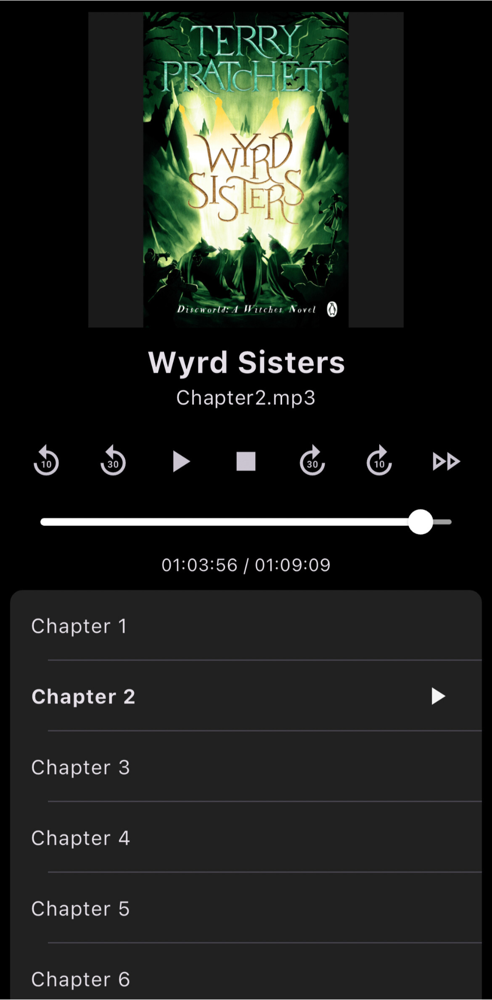
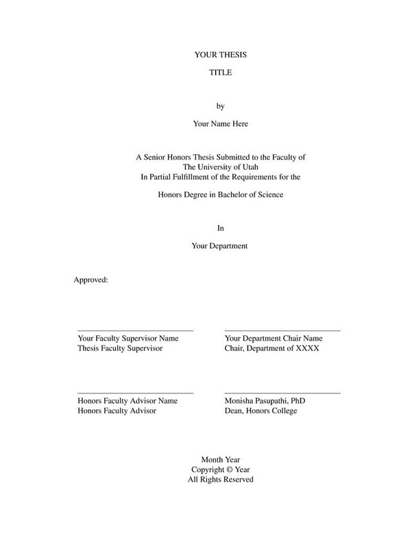

Nichols Crawford Taylor
Projects
I fall asleep much easier listening to audiobooks. One thing I struggle with though, is when I fall asleep I lose my spot, and then have to figure out where I left off every night. This isn't terribly hard, but it's a little annoying when I'm trying to relax.
However, this shouldn't be a hard problem. If I wear a sleep tracker like a FitBit or Apple Watch, they give me a time of when I fell asleep, and it isn't difficult to track when I was listening to a book in software. So, I decided to figure out how to combine those things and automatically restore my place when I fall asleep to a book! It works pretty well, and I'm super happy I made it. It usually is about two minutes off from when I last remember things in the book, but that's pretty solid accuracy when restoring a place in a book.
I made a LaTeX Tempmlate for the University of Utah undergraduate Honors Thesis. The only thing provided was a word doc file to use as a template, and I'd much prefer the citation/reference management and math typesetting and Zotero integration of Overleaf/LaTeX. It looks pretty simple, since most of the formatting in the word doc was just return characters, but it was a little tricky to do with LaTeX. Regardless I had fun making it.
I designed and built a 3D-printed robot arm!
I wanted a robot arm that I could program to do general tasks for me. Buying one is exceptionally expensive, so I decided to build one! I had just a little hobbyist mechanical engineering experience, so I made a lot of design decisions I would probably make differently now.
I designed an actuator with a built in 3D-printed multi-stage planetary gear box. Skateboard bearings are remarkably cheap; you can get 50 of them for ~$12. A little less cheap, you can get two 60 mm inner diameter bearings for ~$14. The gearbox in the actuator was designed around those bearings, with the planet gears fitting just around the skateboard bearings. They were attached to a larger circle that fit in the larger bearing, which had the next stages sun gear on it. I ended up with a ratio of about 60 input turns to 1 output turn.
I used 5008 brushless motors, because they weren't very expensive comparatively, and were wildly overpowered for the application. To control them, I used moteus controllers. These are great. A little pricey, but they work flawlessly. The customer support on the moteus discord is also incredible. Josh is on there constantly, and will help anyone and everyone out. The controllers were dasiy chained for power and control, (I eventually covered the wires with some cable protectors, but wasn't really happy with the end result because the cable protectors were too wide and heavy, and didn't really securely attach to the arm.) The moteus controller uses CAN-FD, and to send commands to the motors I would just connect to them over an FDCAN to USB converter and send CAN frames over serial. I integrated it with MoveIt by creating a controller for the arm, (grarm for green arm) that created the frames manually. I exported my arm to URDF and used MoveIt's Setup Assistant. There were more questionable design choices here. It would be best to use Moteus's already made python interface, as I mention in the repository, and I nevery quite got position and velocity commands working even though that would be a better way of actually controlling it.
I designed the actuators to be sort of modular, and connect together to form the arm. There were a couple sections that were just hollow for length, but the rest was just actuators connected together. This led to a pretty bad weight distribution, with it being very top heavy. I made it 6dof, just based on some other robots I'd seen.
I'd like to build another robot arm, continuing on with the relatively low cost. I'm very inspired by the LIMS2-AMBIDEX, and the kuka forearm design. I think moving away from modular actuation, so that I can improve weight distribution would be good, or just making each component lighter. I'll also not use plastic spur gears, as they broke pretty quickly. As extensions, I'd also like it to be on a mobile base, and build a hand integrated with it. Very ambitions, but I'll try.